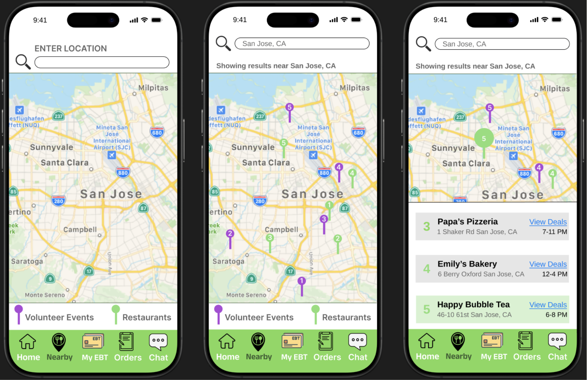

This screen allows users to view available food and volunteer events on a map, filter by type, and see deals available nearby. It's designed for quick visual scanning and easy navigation to food locations.
Users can view restaurant details, select specific food items, and reserve a pickup time. The checkout experience is streamlined with minimal input required to confirm orders.

Businesses or individuals can create volunteer events directly from the app. The form interface is simple and mobile-optimized, and confirmation feedback reinforces success.
To reduce ambiguity and improve coordination, users can chat directly with vendors to ask questions about availability or pickup logistics. This encourages trust and clear communication.